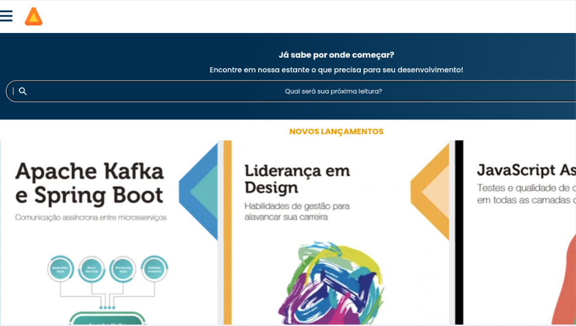

<!DOCTYPE html>
<html lang="pt-br">

</html>

<head>
  <meta charset="UTF-8" />
  <meta name="viewport" content="width=device-width, initial-scale=1.0" />
  <link href="https://cdn.jsdelivr.net/npm/bootstrap@5.3.3/dist/css/bootstrap.min.css" rel="stylesheet"
    integrity="sha384-QWTKZyjpPEjISv5WaRU9OFeRpok6YctnYmDr5pNlyT2bRjXh0JMhjY6hW+ALEwIH" crossorigin="anonymous" />
  <link rel="stylesheet" href="style.css" />
  <title>Meu portfólio</title>
</head>

<body>
  <header class="container text-center">
    
    <p class="lead"> Eu sou Rebeka</p>
    <h1>sou estudante de programação pelo Alura</h1>
    <p>Estou cursando a 3° série do Ensino Médio pela escola Darwin Félix</p>
    <p>Minhas habilidades</p>
    <div>
      <p class="badge bg-secondary">HTML</p>
      <p class="badge bg-secondary">CSS</p>
      <p class="badge bg-secondary">JavaScript</p>
      <p class="badge bg-secondary">Scratch</p>
    </div>
  </header>
  <main class="container mt-5">
    <h2>Meus Projetos</h2>
    <div class="row">
      <!-- Projeto 1 -->
      <div class="col-md-4">
        <div class="card">
          
          <div class="card-body">
            <h5 class="card-title">Corrida</h5>
            <p class="card-text">Jogos de corrida são um dos gêneros mais populares nos videogames, oferecendo uma
              experiência de velocidade, adrenalina e controle preciso de veículos. Existem vários tipos de jogos de
              corrida, desde os mais realistas até os mais arcade, com foco em diversão e criatividade.</p>
            <button type="button" class="btn btn-link" data-bs-toggle="modal" data-bs-target="#modal1">Veja o
              projeto</button>
          </div>
        </div>
      </div>
      <!-- Projeto 2 -->
      <div class="col-md-4">
        <div class="card">
          
          <div class="card-body">
            <h5 class="card-title">ping pong</h5>
            <p class="card-text">O ping pong online (ou tênis de mesa online) é uma versão digital do tradicional jogo
              de
              tênis de mesa, onde os jogadores podem competir uns contra os outros em partidas virtuais. </p>
            <button type="button" class="btn btn-link" data-bs-toggle="modal" data-bs-target="#modal2">Veja o
              projeto</button>
          </div>
        </div>
      </div>
      <!-- Projeto 3 -->
      <div class="col-md-4">
        <div class="card">
          
          <div class="card-body">
            <h5 class="card-title">Carta</h5>
            <p class="card-text">O gênero de jogos de cartas é extremamente vasto e diversificado, abrangendo desde
              jogos
              casuais e sociais até jogos de estratégia intensos e complexos. A principal atração desses jogos é a
              interação entre os jogadores, a diversidade de estratégias envolvidas e a facilidade de aprender e jogar
              com
              amigos ou competidores..</p>
            <button type="button" class="btn btn-link" data-bs-toggle="modal" data-bs-target="#modal3">Veja o
              projeto</button>
          </div>
        </div>
      </div>
      <!-- Projeto 4 -->
      <div class="col-md-4">
        <div class="card">
          
          <div class="card-body">
            <h5 class="card-title">monalisa</h5>
            <p class="card-text">Os jogos de ilusão de ótica são experiências interativas que exploram a maneira como
              nosso cérebro percebe e interpreta imagens ou movimentos, muitas vezes enganando os nossos sentidos e
              criando uma "ilusão" visual. Esses jogos utilizam conceitos de percepções visuais e podem ser extremamente
              divertidos e até desafiadores, já que jogam com a nossa capacidade de interpretar imagens, formas e cores.
            </p>
            <button type="button" class="btn btn-link" data-bs-toggle="modal" data-bs-target="#modal4">Veja o
              projeto</button>
          </div>
        </div>
      </div>
      <!-- Projeto 5 -->
      <div class="col-md-4">
        <div class="card">
          
          <div class="card-body">
            <h5 class="card-title">pipox</h5>
            <p class="card-text">pipox é uma plataforma de streaming que te proporciona os melhores momentos de filme no
              conforto de uma casa
            </p>
            <button type="button" class="btn btn-link" data-bs-toggle="modal" data-bs-target="#modal5">Veja o
              projeto</button>
          </div>
        </div>
      </div>
      <!-- Projeto 6 -->
      <div class="col-md-4">
        <div class="card">
          
          <div class="card-body">
            <h5 class="card-title">BookWave - Seu App de Leitura Personalizada</h5>
            <p class="card-text">é o app perfeito para quem ama ler, oferecendo acesso instantâneo a uma vasta
              biblioteca de e-books e audiolivros em vários gêneros. Seja você um leitor ávido de ficção, não-ficção, ou
              fã de clássicos, o é o app perfeito para quem ama ler, oferecendo acesso instantâneo a uma vasta
              biblioteca de e-books e audiolivros em vários gêneros. Seja você um leitor ávido de ficção, não-ficção, ou
              fã de clássicos, o BookWave proporciona uma experiência de leitura imersiva e personalizada. proporciona
              uma experiência de leitura imersiva e personalizada. </p>
            <button type="button" class="btn btn-link" data-bs-toggle="modal" data-bs-target="#modal6">Veja o
              projeto</button>
          </div>
        </div>
      </div>


  </main>
  <!--Modal 1-->
  <div class="modal" id="modal1" tabindex="-1">
    <div class="modal-dialog">
      <div class="modal-content">
        <div class="modal-header">
          <h5 class="modal-title">corrida</h5>
          <button type="button" class="btn-close" data-bs-dismiss="modal" aria-label="Close"></button>
        </div>
        <div class="modal-body">
          <p>Modal body text goes here.</p>
          <p>O projeto é uma página web criada com HTML e CSS, destinada a exibir uma coleção pessoal de
            livros favoritos. O objetivo é criar um ambiente virtual onde seja possível compartilhar
            seus livros preferidos, fornecendo uma descrição breve de cada um, incluindo o autor, o ano
            de publicação e uma opção de compra.</p>
          <p>A estrutura do site é baseada em HTML, que define a semântica e o layout do conteúdo,
            enquanto o CSS é usado para estilizar a página visualmente, incluindo cores, tipografia e a
            disposição dos elementos.</p>
          <p>O HTML organiza o conteúdo em um cabeçalho com o título do site, seguido por uma divisão
            principal (.container) que apresenta o propósito do site e a coleção de livros em uma seção
            flexível (.livros). Cada livro é destacado em seu próprio contêiner (.livro), mostrando uma
            imagem da capa, detalhes do livro e um link de compra. O design responsivo é garantido pelo
            uso de uma meta tag viewport e um layout flexível que se adapta a diferentes tamanhos de
            tela.</p>
          <p>O CSS personaliza o visual do site, usando variáveis para cores, estilizando o texto com uma
            fonte importada do Google Fonts e aplicando um esquema de cores suaves e botões interativos.
            O uso de HTML e CSS é importante pois assim é possível criar um site acessível e
            esteticamente agradável sem a necessidade de scripts complexos, com foco na usabilidade e na
            experiência da pessoa usuária. A escolha da tipografia e do esquema de cores contribui para
            a atmosfera acolhedora do site, incentivando a exploração da coleção de livros.</p>
          
        </div>
      <div class="modal-footer">
        <a href="https://editor.p5js.org/00001116033136sp/sketches/fB55q9Pe0">Ver projeto ao vivo</a>
        <a href="https://editor.p5js.org/00001116033136sp/sketches/fB55q9Pe0">Ver código do projeto</a>
        <button type="button" class="btn btn-secondary" data-bs-dismiss="modal">Close</button>
      </div>
      </div>
    </div>
  </div>

  <!--Modal 2-->
  <div class="modal" id="modal2" tabindex="-1">
    <div class="modal-dialog">
      <div class="modal-content">
        <div class="modal-header">
          <h5 class="modal-title">corrida</h5>
          <button type="button" class="btn-close" data-bs-dismiss="modal" aria-label="Close"></button>
        </div>
        <div class="modal-body">
          <p>Modal body text goes here.</p>
          <p>O projeto é uma página web criada com HTML e CSS, desenvolvida para apresentar o jogo de Ping Pong, com
            base no curso oferecido pela Alura. O objetivo é criar um ambiente virtual interativo onde os usuários
            possam aprender sobre o jogo, suas regras e o equipamento necessário, além de explorar a história e a
            evolução do esporte.</p>
          <p>A estrutura do site é construída em HTML, que define a semântica e a disposição do conteúdo, enquanto o CSS
            é utilizado para estilizar visualmente a página, aplicando cores, tipografia e o layout dos elementos de
            forma atraente e intuitiva..</p>
          <p>O HTML organiza o conteúdo em um cabeçalho com o título do site, seguido por uma seção principal que
            apresenta o propósito do site e os conceitos fundamentais do Ping Pong, como regras, pontos e estratégias. A
            página também conta com uma seção flexível, que mostra os detalhes do jogo, o desenvolvimento das partidas e
            dicas para melhorar o desempenho. O design responsivo é garantido pela meta tag viewport e um layout
            flexível, que se adapta a diferentes tamanhos de tela, tornando a experiência acessível em dispositivos
            móveis e desktops.</p>
          <p>O HTML organiza o conteúdo em um cabeçalho com o título do site, seguido por uma seção principal que
            apresenta o propósito do site e os conceitos fundamentais do Ping Pong, como regras, pontos e estratégias. A
            página também conta com uma seção flexível, que mostra os detalhes do jogo, o desenvolvimento das partidas e
            dicas para melhorar o desempenho. O design responsivo é garantido pela meta tag viewport e um layout
            flexível, que se adapta a diferentes tamanhos de tela, tornando a experiência acessível em dispositivos
            móveis e desktops.</p>
          
        </div>
      <div class="modal-footer">
        <a href="https://scratch.mit.edu/projects/1025859589">Ver projeto ao vivo</a>
        <a href="https://scratch.mit.edu/projects/1025859589">Ver código do projeto</a>
        <button type="button" class="btn btn-secondary" data-bs-dismiss="modal">Close</button>
      </div>
    </div>
    </div>
  </div>

  <!--Modal 3-->
  <div class="modal" id="modal3" tabindex="-1">
    <div class="modal-dialog">
      <div class="modal-content">
        <div class="modal-header">
          <h5 class="modal-title">carta</h5>
          <button type="button" class="btn-close" data-bs-dismiss="modal" aria-label="Close"></button>
        </div>
        <div class="modal-body">
          <p>Modal body text goes here.</p>
          <p>Curso Alura 1º bimestre 2024 SP - Aprenda a transformar em algoritmos as regras de um jogo de cartas; Use
            seus conhecimentos de matemática e programação para criar seu próprio jogo cartas; Identifique padrões e
            crie estratégias eficazes para resolver problemas; Entenda como dividir problemas grandes em partes menores;
            Crie listas para guardar e manipular os dados do seu jogo.</p>
          
          </div>
      <div class="modal-footer">
        <a href="https://scratch.mit.edu/projects/1002190022">Ver projeto ao vivo</a>
        <a href="https://scratch.mit.edu/projects/1002190022">Ver código do projeto</a>
        <button type="button" class="btn btn-secondary" data-bs-dismiss="modal">Close</button>
      </div>
    </div>
    </div>
  </div>

  <!--Modal 4 -->
  <div class="modal" id="modal4" tabindex="-1">
    <div class="modal-dialog">
      <div class="modal-content">
        <div class="modal-header">
          <h5 class="modal-title">corrida</h5>
          <button type="button" class="btn-close" data-bs-dismiss="modal" aria-label="Close"></button>
        </div>
        <div class="modal-body">
          <p>Modal body text goes here.</p>
          <p>Descubra como combinar arte e programação de forma criativa.
            Aprenda a utilizar P5.js para criar projetos interativos e visuais.
            Aplique conceitos matemáticos, como o teorema de Pitágoras, em projetos de arte digital.
            Desafie-se a recriar a brincadeira "quente e frio" utilizando programação interativa.</p>
          <p>No projeto Monalisa, vamos iniciar a jornada criando nosso primeiro projeto em p5.js. Nesse contexto,
            criaremos formas geométricas; entenderemos como construir diferentes efeitos visuais, por exemplo, como
            colorir e posicionar as formas geométricas no plano cartesiano do p5.js; e também trabalharemos um pouco com
            o efeito visual que a Monalisa tem.</p>
          <p>Por exemplo: quando olhamos para a Monalisa, a impressão ótica é de que o olhar dela nos acompanha,
            independentemente da posição onde estamos. Se estivermos à esquerda, ela olhará para nós. Da mesma forma, se
            estivermos à direita, ela também olhará para nós.
            Nesse caso, faremos uma brincadeira com a pupila do olho, que irá sempre acompanhar o cursor do mouse.
            Aprenderemos tudo isso ao longo desta unidade..</p>
          
        </div>
      <div class="modal-footer">
        <a href="https://editor.p5js.org/00001116033136sp/sketches/AvYsqBdhX">Ver projeto ao vivo</a>
        <a href="https://editor.p5js.org/00001116033136sp/sketches/AvYsqBdhX">Ver código do projeto</a>
        <button type="button" class="btn btn-secondary" data-bs-dismiss="modal">Close</button>
      </div>
      </div>
    </div>
  </div>
  <!--Modal 5 -->
  <div class="modal" id="modal5" tabindex="-1">
    <div class="modal-dialog">
      <div class="modal-content">
        <div class="modal-header">
          <h5 class="modal-title">corrida</h5>
          <button type="button" class="btn-close" data-bs-dismiss="modal" aria-label="Close"></button>
        </div>
        <div class="modal-body">
          <p>Modal body text goes here.</p>
          <p>Neste projeto, vamos aprender a utilizar vscode.dev para criar um aplicativo interativo onde você pode
            explorar
            seu gosto por filmes de forma visual e divertida. Vamos aplicar conceitos de programação para criar
            interfaces dinâmicas, interativas e até efeitos visuais que vão deixar o app mais interessante.
            No projeto do app pipox vamos começar desenvolvendo a tela principal, onde o usuário pode navegar por
            diferentes categorias de filmes e ver trailers. Utilizaremos formas geométricas e animações simples para
            tornar a experiência mais envolvente. Vamos trabalhar, por exemplo, com botões que reagem ao toque do mouse,
            criando uma interface fluída e agradável.</p>
          
        </div>
      <div class="modal-footer">
        <a href="https://isabelaanjos.github.io/pipoxx/">Ver projeto ao vivo</a>
        <a href="https://isabelaanjos.github.io/pipoxx/">Ver código do projeto</a>
        <button type="button" class="btn btn-secondary" data-bs-dismiss="modal">Close</button>
      </div>
    </div>
    </div>
  </div>
  <!--Modal 6 -->
  <div class="modal" id="modal6" tabindex="-1">
    <div class="modal-dialog">
      <div class="modal-content">
        <div class="modal-header">
          <h5 class="modal-title">corrida</h5>
          <button type="button" class="btn-close" data-bs-dismiss="modal" aria-label="Close"></button>
        </div>
        <div class="modal-body">
          <p>Modal body text goes here.</p>
          <p>Neste projeto, vamos aprender a utilizar o vscode.dev para criar um aplicativo interativo onde você pode
            explorar sua paixão por livros de forma visual e divertida. Vamos aplicar conceitos de programação para
            criar interfaces dinâmicas, interativas e até efeitos visuais que tornarão o app ainda mais interessante.
            No projeto do app BookWave , vamos começar desenvolvendo a tela principal, onde o usuário poderá navegar por
            diferentes categorias de livros e visualizar resenhas, sinopses e até amostras dos livros. Utilizaremos
            formas geométricas e animações simples para tornar a experiência mais envolvente. Vamos trabalhar, por
            exemplo, com botões que reagem ao toque do mouse, criando uma interface fluida e agradável.</p>
          
        </div>
      </div>
      <div class="modal-footer">
        <a href="">Ver projeto ao vivo</a>
        <a href="">Ver código do projeto</a>
        <button type="button" class="btn btn-secondary" data-bs-dismiss="modal">Close</button>
      </div>
    </div>
  </div>

  <footer class="container py-5">
    <h2>Entre em Contato</h2>
    <div>
      <a href="   https://github.com/isabelaanjos   ">GitHub</a>
    </div>
    <p class="my-5 text-center">©️ Copyright 2024. Produzido por Rebeka_</p>
  </footer>
  <script src=" https://cdn.jsdelivr.net/npm/bootstrap@5.3.2/dist/js/bootstrap.bundle.min.js">
  </script>
</body>

</html>